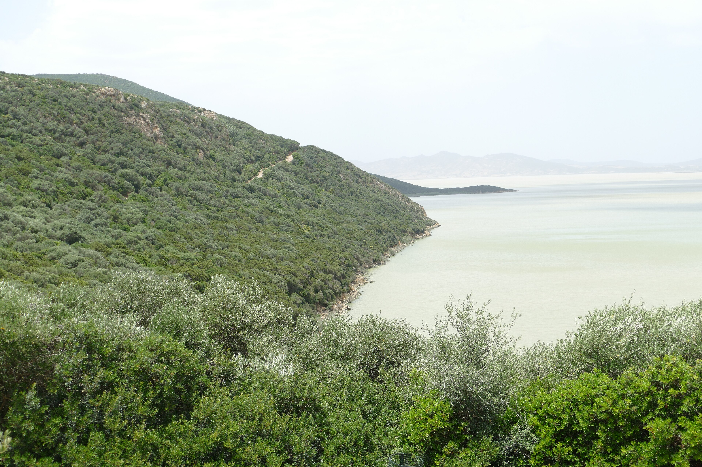
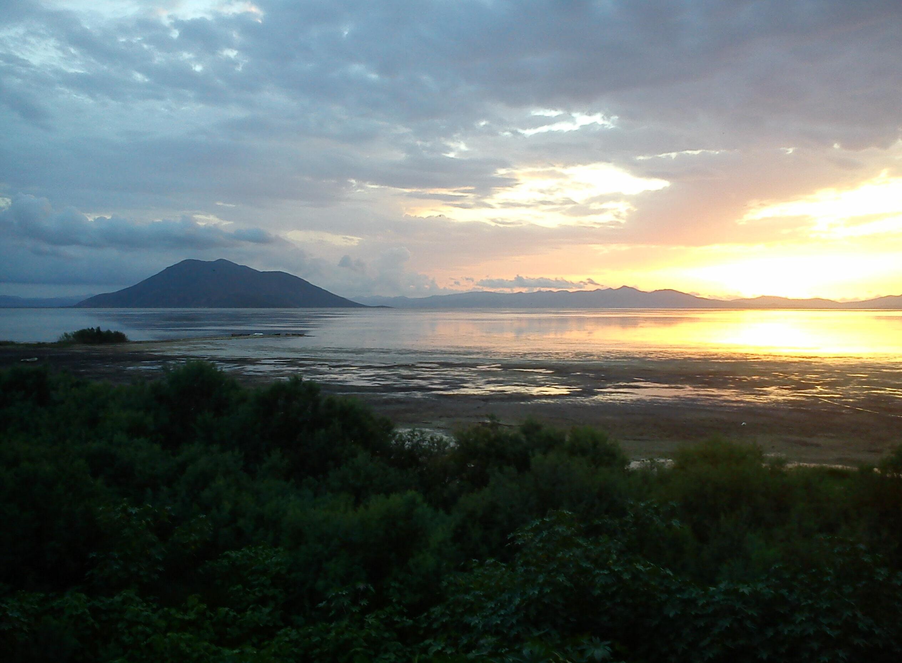
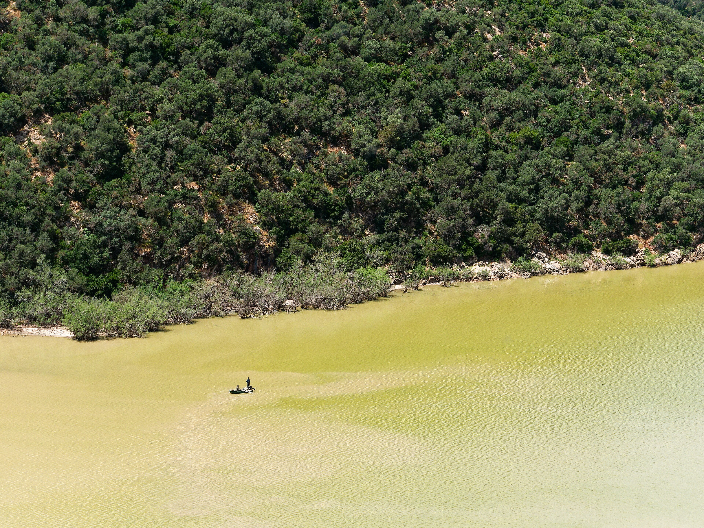
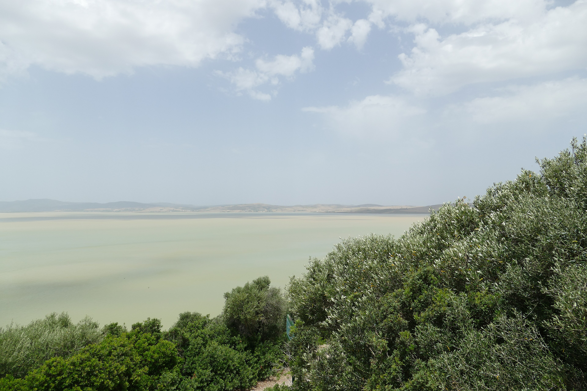
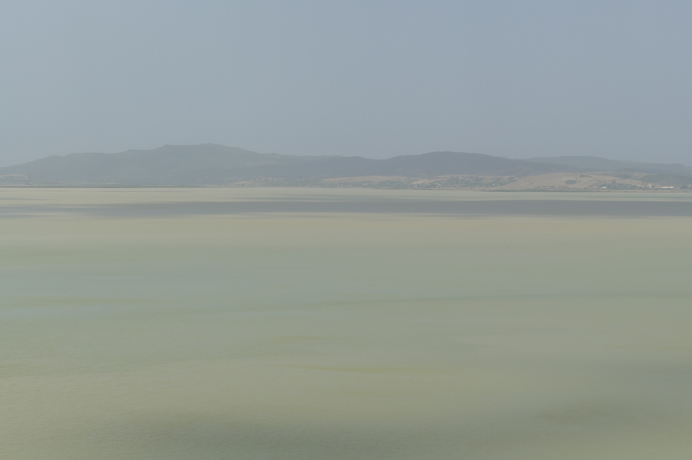
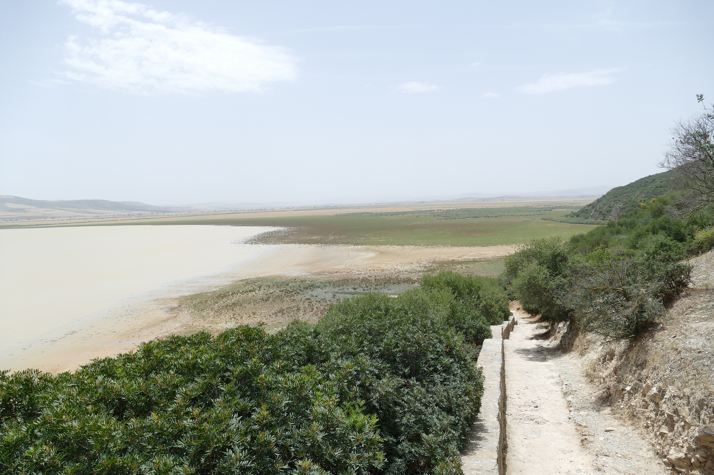
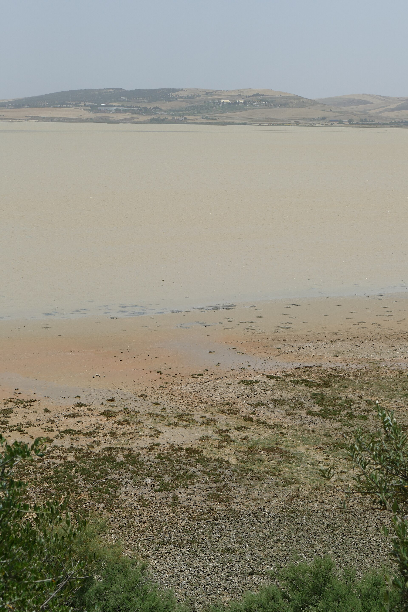

Where ancient oases meet the desert's edge, a sanctuary of water, life, and heritage in the heart of North Africa.
Nestled in the arid landscape of northern Tunisia, Ichkeul National Park stands as a testament to the ingenuity of human adaptation to the desert, inscribed as a UNESCO World Heritage Site in 1980 for its exceptional natural and cultural values.

| Location: | Tunisia, Kairouan Governorate, 35.3333° N, 10.1667° E |
| Year of UNESCO Inscription: | 1980 |
| Category: | Mixed |
| UNESCO Reference: | 71 |
| Criteria: | (v)(x) |
| Coordinates: | 35.3333, 10.1667 |
| Area: | 1,670 hectares (core area), 22,000 hectares (total park) |
Ichkeul National Park is not merely a geographical location; it is a living system that defines the **Sahel** region of Tunisia. The name "Ichkeul" itself refers to the central marshland, a vital natural wetland that serves as the hydrological heart of the area. This ecosystem is surrounded by a complex network of oases, which have been cultivated for centuries to sustain human life in an otherwise harsh, semi-arid environment. The interplay between the natural marsh and the cultivated oases creates a unique landscape of extraordinary beauty and ecological significance.

The park is a prime example of **cultural landscape**, where the boundary between nature and human intervention is blurred. The oases are not just sources of food; they are the foundation of a distinct social and economic structure. For generations, the inhabitants of Ichkeul have lived in harmony with the rhythms of the water table, developing sophisticated irrigation techniques to maximize the potential of the land. This harmonious coexistence is what earned the site its UNESCO recognition, highlighting the importance of preserving not just biodiversity, but also the traditional knowledge that sustains it.
Visitors to Ichkeul are often struck by the contrast between the lush greenery of the date palms and the stark, sandy dunes that encircle the park. This visual dichotomy is a reminder of the delicate balance required to maintain life in such an environment. The park serves as a buffer zone, protecting the core wetlands from the encroaching desert and providing a habitat for a wide variety of flora and fauna. It is a place where the past and present converge, offering a glimpse into a way of life that is both ancient and enduring.
The survival of the Ichkeul ecosystem depends entirely on its **hydrological cycle**. The park is fed by a complex system of underground water tables, springs, and seasonal streams. Historically, the community developed a method known as **foggaras** or **khettara** (though in Tunisia, the specific local adaptation is often referred to as the *seguia* or canal system) to bring water from the deeper aquifers to the surface. These channels are carefully maintained by the local population, who understand that the flow of water is the lifeblood of their community.

The management of water in Ichkeul is governed by traditional laws and social norms that have been passed down through generations. These norms dictate how much water each family or plot of land is entitled to, ensuring that the resource is shared fairly and sustainably. This form of **common-pool resource management** is a remarkable example of social engineering, demonstrating how community consensus can be used to manage scarce resources effectively. The system is highly efficient, minimizing waste and maximizing the productive use of every drop of water.
In recent decades, however, this delicate balance has been threatened by changes in land use, over-extraction of ground water, and the introduction of more water-intensive crops. The natural recharge of the aquifer is slow, and the demand for water far exceeds the natural supply. This has led to a decline in the water table, affecting both the natural wetlands and the agricultural oases. Conservation efforts now focus on restoring the traditional water management practices and reducing the pressure on the aquifer to ensure the long-term viability of the site.
Ichkeul National Park is a haven for biodiversity, particularly for species that are rare or endangered in other parts of North Africa. The wetlands provide a critical habitat for migratory birds, serving as a stopover point on the **East Atlantic Flyway**. The park is home to a wide variety of bird species, including the **Crane**, the **Stork**, and numerous species of waterfowl. These birds rely on the marshes for food and shelter, making the preservation of the wetlands essential for their survival.

Beyond avian life, the park supports a rich diversity of plant species. The **date palm** (*Phoenix dactylifera*) is the dominant tree, forming a dense canopy that provides shade and habitat for other species. Beneath the palms, a variety of shrubs and grasses thrive, creating a multi-layered ecosystem. The wetlands are also home to a variety of aquatic plants, which play a crucial role in filtering water and stabilizing the soil. This biodiversity is not only important for ecological reasons but also for the cultural identity of the local community, who have a deep connection to the flora and fauna of their environment.
The park is also known for its mammalian diversity, including species such as the **Aoudad** (Barbary Sheep), the **Cheetah** (historically, though now critically endangered and possibly extinct in the wild in Tunisia), and various species of small mammals. The presence of these species indicates the health of the ecosystem and the effectiveness of conservation efforts. Protecting the habitat of these animals is a key priority for park management, as it ensures the integrity of the food web and the overall ecological balance of the region.
The cultural heritage of Ichkeul is as significant as its natural beauty. The oases are not just agricultural units; they are centers of social life, where community bonds are forged and traditions are preserved. The **date harvest** is a major event in the annual calendar, bringing together families and neighbors in a celebration of abundance and cooperation. This event is a testament to the communal spirit that has sustained the oases for centuries. The knowledge required to cultivate dates, from planting to harvesting to processing, is a form of **intangible cultural heritage** that is closely tied to the landscape.

The architecture of the oases also reflects the unique cultural identity of the region. The traditional houses are built from local materials, such as mud brick and stone, and are designed to maximize natural ventilation and minimize heat gain. These structures are well-adapted to the local climate and reflect the ingenuity of the local builders. The layout of the oases, with their narrow pathways and central courtyards, creates a sense of community and privacy that is characteristic of the region. This architectural heritage is an important part of the park's identity and should be preserved along with the natural environment.
The people of Ichkeul are the custodians of this heritage. Their traditional knowledge and practices are essential for the maintenance of the oases and the wetlands. However, modernization and urbanization are threatening to erode this knowledge, as younger generations move to cities and pursue different careers. Efforts are underway to document and preserve this intangible heritage, ensuring that it is passed on to future generations. By recognizing the value of traditional knowledge, conservation efforts can be more effective and sustainable, as they are grounded in the reality of local life.
For those interested in other examples of cultural landscapes that blend human ingenuity with natural beauty, consider exploring the City of Cuzco Peru UNESCO Post, which also showcases the deep integration of human settlement and historical landscape.
Despite its significance, Ichkeul National Park faces several serious threats. The most pressing of these is **water scarcity**. The aquifer that feeds the oases is being depleted faster than it can be recharged, leading to a decline in the water table and the drying up of some of the natural wetlands. This is exacerbated by the expansion of agriculture outside the park, which competes for the same water resources. Climate change is also a concern, as it may lead to more frequent and severe droughts, further stressing the ecosystem.

Another major threat is the introduction of **invasive species**, such as the **Tamarisk** tree, which consumes large amounts of water and can outcompete native species. The spread of Tamarisk has been linked to the decline of native vegetation and the degradation of the wetlands. Controlling the spread of invasive species is a difficult and ongoing challenge, requiring significant resources and coordination among different stakeholders. The loss of habitat for native species, including birds and mammals, is a direct consequence of these threats.
Socio-economic pressures also pose a challenge to conservation. The local population relies on the oases for their livelihood, and any restrictions on water use or land access can be controversial. Balancing the needs of the local community with the needs of the ecosystem is a complex task that requires careful planning and inclusive decision-making. Conservation efforts must be integrated into the broader development plans of the region, ensuring that they are beneficial to both people and nature. This requires a holistic approach that takes into account the social, economic, and environmental dimensions of the issue.
Comparing this to other natural sites, the challenges faced by Ichkeul are similar to those in Mana Pools National Park Zimbabwe UNESCO Post, where community-based conservation is key to managing human-wildlife coexistence in sensitive ecosystems.
In response to these threats, a number of conservation initiatives have been launched in Ichkeul National Park. These include the restoration of traditional water management systems, the planting of native species to replace invasive ones, and the establishment of protected areas to safeguard critical habitats. International organizations, such as **UNESCO** and the **IUCN**, have provided technical and financial support for these efforts. The goal is to create a sustainable management plan that balances the needs of the local community with the conservation of the natural environment.

Education and awareness-raising are also key components of the conservation strategy. Programs are being implemented to inform the local population about the importance of the park's biodiversity and the need to protect it. By fostering a sense of ownership and responsibility, these programs aim to encourage the community to take an active role in conservation. This participatory approach is essential for the long-term success of conservation efforts, as it ensures that they are supported by the people who live in the area.
The future of Ichkeul National Park depends on the ability of stakeholders to work together to address the challenges it faces. If successful, the park can serve as a model for the sustainable management of cultural landscapes in arid regions. It can demonstrate that it is possible to preserve biodiversity and cultural heritage while also supporting the livelihoods of the local population. The lesson of Ichkeul is that conservation is not just about protecting nature, but about protecting the relationship between people and their environment.
Explore another remarkable North African heritage site that showcases the rich history and architectural grandeur of the region.
Ichkeul National Park is a jewel of the Tunisian landscape, a place where nature and culture intertwine in a delicate and beautiful dance. Its inscription as a UNESCO World Heritage Site is a recognition of its outstanding universal value, both for its natural biodiversity and its cultural significance. The park is a testament to the ingenuity of the people who have lived there for centuries, and to the importance of preserving the traditional knowledge that has allowed them to thrive in a challenging environment.
As we face the challenges of the 21st century, Ichkeul serves as a reminder that sustainability is not just a modern concept, but a timeless one. By learning from the past, we can find solutions to the problems of the present. The preservation of Ichkeul is not just about saving a park, but about saving a way of life, a model of coexistence between people and nature that is urgently needed in our world today.
What is the main reason for Ichkeul National Park's UNESCO inscription?
The park was inscribed under criteria (v) and (x) for being an outstanding example of a traditional human settlement and land-use, and for containing the most important and significant natural habitats for in-situ conservation of biological diversity.
Can visitors hike through the entire park?
No, the park is carefully managed to protect its fragile ecosystem. Visitors are restricted to designated trails and areas to minimize disturbance to the wildlife and vegetation.
What is the best season to visit Ichkeul?
The best time to visit is during the spring (March to May) and autumn (September to November) when the weather is mild and the landscape is green. Summer can be extremely hot, and winter can be cool and rainy.
Are there accommodations available inside the park?
There are limited accommodations within the park, such as eco-lodges and guesthouses, which offer a chance to experience the tranquility and beauty of the oases up close.
| Site Name | Ichkeul National Park |
| Country | Tunisia |
| Continent | Africa |
| Category | Mixed |
| Year of Inscription | 1980 |
| UNESCO Reference | 71 |
| Criteria | (v)(x) |
Access — The park is accessible by car from Tunis or Sfax, approximately 3-4 hours away. Local guides are recommended for navigating the oasis trails.
Best Time to Visit — Spring (March-May) and Autumn (Sept-Nov) offer the most pleasant weather and vibrant landscapes.
Permits — Entry fees apply, and some areas may require specific permits for photography or scientific research.
Activities — Guided walks through the oases, bird watching, visiting traditional date processing sites, and exploring the wetlands.
What to Bring — Comfortable walking shoes, sun protection, plenty of water, and a camera for the stunning scenery.
Etiquette — Respect the local community and their traditions. Do not disturb the wildlife or pick plants. Follow all signage and stay on marked trails.
Map showing the location of Ichkeul National Park. Coordinates: 35.3333, 10.1667
UNESCO World Heritage Centre — Ichkeul National Park: https://whc.unesco.org/en/list/71
IUCN World Heritage Outlook — Ichkeul National Park: https://worldheritageoutlook.iucn.org/explore-sites/ichkeul-national-park
Wikipedia — Ichkeul National Park: https://en.wikipedia.org/wiki/Ichkeul_National_Park
Scientific Journal: "Hydrological Dynamics and Land Use Change in the Sahel Oases of Tunisia" — Journal of Arid Environments